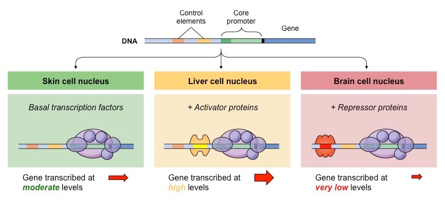
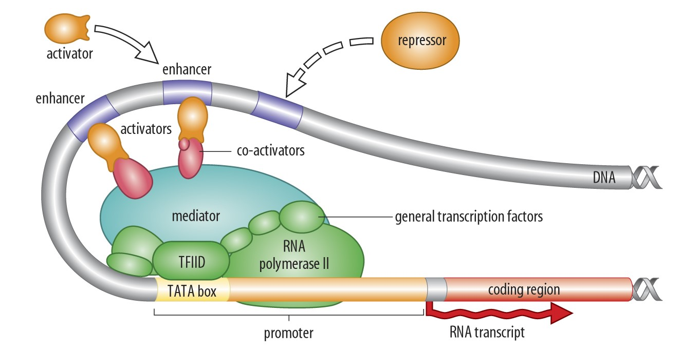
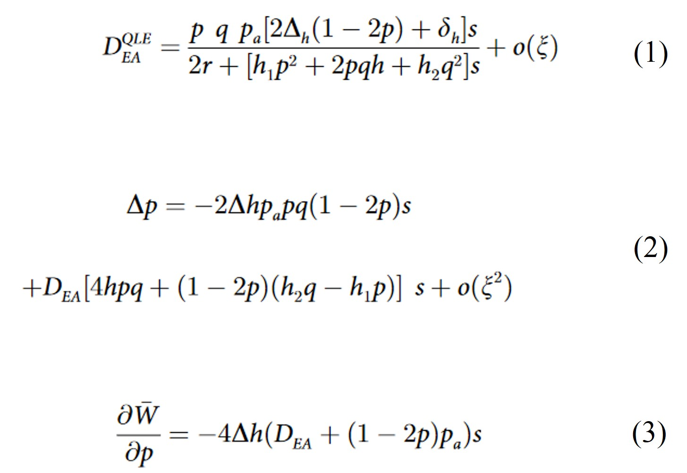

Enhancer Runaway and the Evolution of Diploid Gene Expression

Table of contents
Introduction
This was my PhD project, supervised by Dr. Thomas Lenormand at the Centre d'Ecologie Fonctionelle et Evolutive. In a few words, we used a very simple model of gene expression regulation to uncover a very general process of non-adaptive selection that should apply very broadly and favour the invasion of stronger cis-regulatory sequences. This has led to a number of very interesting predictions. Particularly, we realized that this very process should be involved in the degeneration of the heterogametic sex chromosomes (Y or W) and the concurrent dosage compensation in homogametic sex chromosomes (X or Z), without necessarily invoking selection interference as do previous theories. In this page, you will find a complete presentation of the project and its achievements, in a way that I hope will be understandable for most.
Gene Expression and its Regulation
During the early decades of genetics, the empasis has been put on the genes and their evolution. Genes are DNA sequences that, after a double process of transcription into RNA and translation into amino-acids, allows for the production of proteins, the main cell component involved in all biological processes. Commonly, it is said that genes are our "footprints": they hold the information necessary to build all the proteins we need to live and thrive. One of the most powerful feature of our genomes is that the same raw information is used to create neurones, adipocytes, bones, skins, eyes, etc. Genomes are polyvalent: the same information can produce a great diversity of outcomes in different cells. This is possible because genes are not expressed (used) at all times in all cells: each cell only uses a subset of the genes, it only uses what it needs. Obviously, a liver cell has no use in producing the proteins involved in hair production: in liver cells, all the genes involved in the process of producing hairs are shut down. More generally, genes are regulated: their expression (their actual activity) varies in time and space (cell type).
The regulation of gene expression depends on other DNA sequences. There exists two types of regulatory trans-acting regulators are protein-coding sequences. Also called Transcription Factors, they are essentially genes that allow the production of some proteins that bind DNA sequences close to other genes to activate or silence their expression. These bound sequences are the other type of regulatory sequences: the cis-acting regulators. These are not coding sequences: they do not produce any proteins. Generally referred to as Enhancers or Promoters. Their role is to attract Transcription Factors to promote or silence gene expression. Transcription Factors act in trans because the proteins they produce can modify the expression of many genes, located anywhere in the genome. Especially, in Diploids (organisms like humans that owns two copies of each chromosome), Transcription Factors modify the expression of both copies of any gene it interacts with. In contrast, Enhancers (or Promoters) only modify the expression of the gene close to which they are located. In Diploids, Enhancers modify the expression of the gene copy located on the same chromosome only, not of the other (homologous) copy.
In recent years, more work has been done to understand the evolutionary importance of gene regulatory sequences. We already knew that the sequences of protein-coding genes evolve in response to a diversity of evolutionary forces (different types of selection, mutations, migrations, random processes). What about regulatory sequences (cis or trans)? Great studies have shown that they evolve too, and that actually they are responsible for the majority of evolutionary changes observed between species.
A Model of Enhancer Polymorphism
Researchers have tried for a while now to understand which evolutionary forces impact the evolution of regulatory sequences, and how. It is clear that they respond to directional selection (adaptation): when human populations have moved towards less sunny environment, a good way to adapt has been to turn down the production of skin melanin, in order to make the most of the few sunrays available. This was much easier than changing the melanin protein to let through more sunrays. Thinking about the consequences of cis- regulatory polymorphism in Diploids, we realized that Enhancers might also partly evolve selfishly, a theory that had never been formulated before. To understand that, look at the drawing on Fig. 1 on the right. In this toy model, we just consider a protein-coding gene under purifying selection (deleterious mutations exist and are selection against) and a cis-regulatory sequence that modifies the relative amount of the protein produced by each gene copy. A gene copy that is associated with a stronger Enhancer will participate more in protein production than an homologous gene copy associated with a weaker enhancer. As a consequence, the purifying selection will act more strongly on a gene copy associated with stronger than with weaker Enhancers. For population geneticists, we realized that cis-regulatory polymorphism modifies the dominance of gene alleles: alleles associated with stronger Enhancers are more dominant, while alleles associated with weaker Enhancers are more recessive.
The Enhancer Runaway Process
The consequences of that is that purifying selection purges deleterious mutations more efficiently on gene copies associated with stronger Enhancers (because they are more "visible" to selection). As a result, we expect after some evolutionary time that gene copies associated with stronger Enhancers have overall better fitness (less detrimental effect on individuals' ability to survive and reproduce) than gene copies associated with weaker Enhancers. In population genetics term, a genetic association (linkage disequilibrium) builds up between stronger Enhancers and good gene alleles, and between weaker Enhancers and bad gene alleles. This is expected to have a direct consequence on the Enhancer evolution: stronger Enhancers, overall, will be found associated with better genetic background (since it is associated with gene alleles bearing less deleterious mutations). This is confirmed by the math: equation (1) shows an approximated value of the linkage disequilibrium between stronger Enhancers and more viable gene allele - it is always positive. Equation (2) shows that, because the expression within brackets on the second line can be shown to be always positive, the positive linkage disequilibrium DEA tends to produce positive frequency change of stronger Enhancer alleles after one generation (Δp).
Selection for and spread of stronger Enhancers do not necessarily happen though. The first line of equation (2) shows that, because Δh is positive in this model, there is a selection against the rarest Enhancer allele: if the strongest Enhancer allele is the rarest (p < 1/2), this term tends to produce a negative frequency change of it; if it is the most common (p > 1/2), it tends to produce a positive frequency change. This is because polymorphism at the Enhancer locus is detrimental: as it tends to increase the average dominance coefficient (Δh > 0) of deleterious mutations, these have a stronger impact in reducing individuals' fitness. Importantly, because of this latter effect of Enhancer polymorphism, when a new Enhancer spreads to fixation, it tends to decrease population mean fitness (W), as evidenced on equation (3). Thus, it appears that the spread of stronger Enhancers, due to their association with generally better genetic backgrounds, is in some way selfish: it does not benefit the host individuals. Worse: it harms them, because it overall reveals their deleterious mutations. Interestingly, the process is based on relative Enhancer strengths. This means that once a stronger Enhancers have spread and fixed, then a new mutation creating an even stronger Enhancers might in turn spread and get fixed. Hence the idea of Runaway: ever stronger Enhancers should spread and fix as long as they can exist. Because it is an indirect selection, the intensity of the process is expected to be quite small; however, it should apply very broadly (for any Enhancers with strong enough association with alleles of a regulated gene under selection), such that we would expect it to have had some influence on cis-regulatory evolution. Gene expression levels (amount of proteins produced by the genes) are often under stabilizing selection: there is an optimal expression level, and protein too many or too few proteins is detrimental. For example, producing too many hairs may be not too great for my ability to survive and reproduce, as it might interfere with other biological functions - however, I do need a certain amount, and having less than that would make me loose too much body heat for example. The runaway process is expected to be limited by this stabilizing selection on expression levels: when Enhancer strength is overall increased by the runaway process, that should lead to increased expression of genes, which is expected to be deleterious. However, gene expression regulation is performed via a complex network of interactions: for each genes, various Enhancers interact with a diversity of Transcription Factors to produce complex and precise expression patterns. These networks have been demonstrated to be pleiotropic: there are many different combinations that can lead to the same patterns. A very simple example: imagine a stronger Enhancer - a way to not increase global expression level is to have it interact with a weaker Transcription Factor, such that the overall result of the interaction is similar expression levels. Because Transcription Factors act on both homologous gene copies, the Enhancer Runaway would still happen (the gene copy asociated with the stronger Enhancer still participate to protein production more), but the global expression level could be maintained at optimum. As we showed with simple simulations, such coevolution between agents of the regulatory network could allow (though it slows it down) the Enhancer Runaway process to lead to overall stronger Enhancers without compromising optimal expression levels.
Recombination Influence on the Runaway Process
The base of the process is the genetic association between stronger Enhancers and more viable gene alleles. Genetic associations are regularly broken down by recombination, the genetic process that tends to reshuffle gene combinations. The strenght of the association between stronger Enhancers and more viable gene alleles depend on the recombination rate between the two sequences: higher recombination rate will mean weaker genetic associations, and thus weaker indirect selection for stronger Enhancers. As blatant on Fig. 2, we realized that there is a maximum recombination rate above which the Enhancer Runaway does not work anymore: the indirect selection is so small that it is overpowered by the overall detrimental effect of the process (transient increase of dominance coefficients, see above). In other words, for the process to take place, recombination needs to be small enough.
An important consequence of that is that we expect the Enhancer Runaway to proceed at different speed for Enhancers located more or less close to their regulated. Enhancers are generally located upstream of the gene their regulate, in their proximity but at varying genetic distances. Because the probability of a recombination event happening between two given sequences increases with the genetic distances between them, we expect Enhancers located further away from their genes to be less prone to undergo the Enhancer Runaway process. Ultimately, we expect that there is a "window" close to the genes where Enhancers could undergo the process; further away, the recombination rate is too large for the process to take place.
The Runaway Process in Clonal Asexuals
Asexuality encompasses various forms of reproduction, from apomixis (the by-pass of meiotic division altogether) to different types of automixis (modification of meiosis) and to endoduplication (the duplication of the genetic material prior to meiosis, followed by the pairing of sister chromosomes and meiosis). Endoduplication and apomixis are clonal reproduction, while automixis is not: in the former, the genome of the offspring is the exact copy of the genome of the mother, except for possible mutations. Clonality is thus a reproductive mode where genetic associations are never broken down by recombination. What is more, in clonal asexuals, there is no segregation either: all the genome of the mother is transmitted to every offspring.
In the Enhancer Runaway process, stronger Enhancers get associated with more viable genetic background, which is facilitated in clonal asexuals by the absence of recombination and by reduced homozygosity (the process relies on double heterozygotes). However, because of the absence of both recombination and segregation, such a favoured genetic association can never escape its chromosome of origin. This means that a stronger Enhancer can never reach fixation - at best, it can only be present on one chromosome in every individual. Because homozygosity can never been restored, the process leads in clonal asexuals to an haploidization loop: (1) a stronger Enhancer get associated with a more viable gene allele, while on the homologous chromosome a weaker enhancer is associated with a less viable gene allele; (2) a new mildly deleterious mutation is more susceptible to arise and randomly spread on the gene copy associated with the weaker Enhancer, since selection is less effective; (3) an even weaker Enhancer tends to spread associated with the gene copy with more deleterious mutations, as it contributes in masking their effect; (4) after some evolutionary time, one gene copy is degenerated (has accumulated many deleterious mutations) and is mostly hidden (not expressed). We thus realized that in clonal asexuals, the runaway process should lead to the haploidization of the expression of genes under selection; note however that the remaining expressed gene copies need not be all located on the same chromosome.
The Runaway Process in Sex Chromosomes, an Alternative Theory for their Evolution
Among genetic sex determination system, X/Y and W/Z sex chromosomes are much represented and much studied. In these systems, one sex is homogametic (females XX or males ZZ) and the other is heterogametic (males XY or females WZ). In both cases, one chromosome (Y and W) is present in only one sex, always in an hemizygous state (only one copy of the chromosome), and always degenerate (much smaller than the other sex chromosome). It is believed that the evolution of such sex chromosomes is initially triggered by the arrest of recombination in heterogametic individuals - this arrest would allow to tightly associate sex-determining gene alleles with genes selected differently depending on the sex of the bearer. Most accepted current theory considers that this arrest of recombination leads to the accumulation of deleterious mutations on the hemizygous chromosome due to selective interference (Hill-Robertson effect, equivalent to Muller's Ratchet): selection being less efficient without recombination, deleterious mutations more easily spread to fixation due to random drift. The other chromosome does not suffer from this process since it is homozygote and recombining in one sex.
Predictions
Following the results obtained from our models, we made a series of predictions, patterns we expect the runaway process to result in:
- Stabilizing selection on expression levels tends to decrease the rapidity of the runaway process, since it forces it to resort to coevolution within the network in order to ensure stable expression levels despite increasingly strong Enhancers. Consequently, we expect the runaway process to proceed faster for genes whose regulatory elements are subject to lesser stabilizing selection on expression levels. For example, this can be the case of genes embedded in negative regulatory feedback loop, whereby total expression levels are maintained at a certain level independently of regulatory sequences.
- The runaway process is expect to works faster for Enhancers located closer from their regulated gene (reduced recombination). Overall, we thus expect the process to create a positive correlation between the proximity of an Enhancer to their gene and their strength.
- The selective force on which the runaway process is based is an indirect, hitch-hiking selective process. Consequently, it is
directly proportional to the intensity of the purifying selection on the regulated gene (as can be seen on equation (2) above). Thus,
the runaway should be stronger for
cis- regulatory regions of genes under stronger selection: such genes should overall exhibit stronger Enhancers, and Enhancers under the influence of the runaway process at larger genetic distances. - The runaway process relies on double heterozygotes. Thus, it is expected to have a larger impact in species exhibiting larger
amounts of heterozygosity. For example, self-fertilizing and automictic species, with reduced levels of heterozygosity, are expected
to be less prone to this process. This leads us to anticipate than in F1 crosses between closely-related outcrossing and self-fertilizing species,
where
trans -regulators are shared, gene alleles from the outcrossing parent should be consistently more expressed than alleles from the self-fertilizing, since they have stronger Enhancers. - The runaway process, in our model, is infinite. However, it is probably more realistic to assume that there are natural limitations:
for example, the attractivity of Enhancers and the number of
trans- regulators they are able to attract cannot indefinitely increase. After some time, we expect the process to come to a standstill because there are no or few additional mutations able to increase their strength or decrease the strength of associatedtrans- regulators (which have decreased in strength to compensate the increase of Enhancers' strength and maintain optimal expression levels). We thus expect that the distribution of random mutations on Enhancers submitted to the runaway process should be biased towards strength-decreasing mutations. Similarly, the distribution of random mutations oftrans- regulators associated with Enhancers under the runaway process should be biased towards strength-increasing mutations. - More complex regulatory networks are expected to facilitate the runaway process, by making available a larger diversity of
cis/trans -regulatory combinations that should allow for an easier coevolution within the network to always maintain optimal expression levels. Interestingly, the reverse should also be true: the runaway process should favor more complex regulatory networks. This is because a diversity of options are possible for Enhancers to increase their strength. For example, a duplication of a Transcription Facotr binding motif could happen within an Enhancer to attract a greater number of those. Later, these duplicated sequences could diverge to attract a diversity of Transcription Factors, overall participating to morecis/trans links. There is thus a feedback loop associating enhancer runaway process and regulatory architecture complexity: we predict that species that should exhibit stronger runaway (for example, outcrossing species compared with self-fertilizing species) should also display more complex regulatory networks. Under this view, regulatory complexity is not a trait directly selected for; rather, it is a by-product of ongoing genomic processes. - It has been considered that, because many different regulatory combinations can lead to the same phenotype, part of the evolution
of regulatory networks is neutral and at random. Here, the evolution is not random: it favours the spread of combinations with stronger Enhancers close to the regulated
genes. More importantly, it should lead to faster-than-neutral sequence divergences between closely-related species with identical expression
patterns.
cis- regulatory sequences should especially show faster-than-neutral divergence rates. - Clonal species should display frequent allele-specific expression, whereby one gene allele contributes more than its homolog to gene expression. This is because for each gene under selection, one allele is expected to be progressively downregulated and the other upregulated. The gene allele that contributes less to protein production is also expected to exhibit more deleterious mutations.
- Classic theories of sex chromosome evolution after recombination arrest invoke selection interference leading to the accumulation of deleterious mutations in protein-coding or regulatory sequences to explain the degenerescence of Y (or W) chromosomes. Selection interference, however, is an explanation that requires a great number of loci under selection to be able to play out. The runaway process, in contrast, does not rely on selection interference, and can play out with a unique locus under selection, even though we do expect the degenerescence and downregulation of Y/W chromsomes to be easier with multiple locus. This mechanism is thus compatible with the evolution of relatively small non-recombining blocks, which can be more difficultly explained with classic theories.